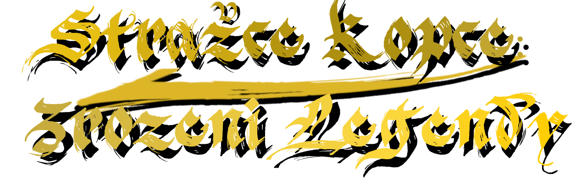

Probudíš se v temnotě. Chladná zem pod tebou, kapky vody dopadající ze stropu jeskyně a v hlavě prázdno. Nevíš, kdo jsi. Nevíš, jak ses sem dostal. Jen na svém těle cítíš zvláštní znamení – slabě pulzuje, jako by mělo vlastní život.
Když se konečně dostaneš ven, přivítá tě tichý les. Na první pohled klidný, ale něco je špatně. Vzduch je těžký, zvířata neklidná a v dálce, nad osamělou horou, se neustále stahují mraky. Bouře, která nikdy nekončí.
Putuješ dál, učíš se přežít. Každý krok tě stojí síly, každý střet tě něco naučí. Až nakonec dorazíš k oppidu – malé osadě, kde lidé stále bojují o přežití. Přijmou tě mezi sebe, dávají ti úkoly, učí tě, jak žít v tomto světě. Pro ně jsi jen další poutník. Ale ne všichni se na tebe dívají stejně. Někteří si všímají tvého znamení. Někteří se ho bojí.
Jak procházíš krajinou, začínáš nacházet pozůstatky minulosti. Rozpadlé stavby, zapomenuté oltáře, vytesané symboly. Střípky příběhu, který nikdo nevypráví celý. Postupně z nich skládáš pravdu.
Hora nebyla vždy prokletím. Byla zdrojem síly. Keltové ji kdysi udržovali v rovnováze, chránila krajinu i lidi. Ale něco se změnilo. Síla se zvrátila. To, co mělo chránit, začalo ničit.
Korupce se rozšířila do světa. Zvířata se změnila. Lidé také.
Aby byla síla udržena na uzdě, vždy existoval Strážce. Ten, kdo ji ovládal… nebo jí byl ovládán.
S každým krokem blíž k hoře si začínáš uvědomovat, že ty sám do toho příběhu patříš víc, než bys chtěl. Znamení na tvém těle není náhoda. Je to připomínka. Možná jsi kdysi stál tam, kam teď míříš.
Cestou potkáváš Šampiony. Mocné bojovníky, kteří selhali. Někteří chtěli horu dobýt, jiní ji chránit. Všichni skončili stejně – pohlceni její silou. Každý z nich je varování.
Nakonec dorazíš na vrchol.
Tam na tebe čeká Taranok. Poslední z těch, kdo ještě odolává. Bojovník, který ví, co se stane, pokud selžeš. V jeho očích není jen hněv… ale i únava. Porazíš ho. Ale tím se nic nekončí.
Obloha se roztrhne.
Z bouře sestoupí Raegor – prastarý drak, živoucí ztělesnění síly hory. Hrom, oheň, vítr. Samotná podstata toho, co jsi celou dobu cítil.
Po jeho pádu nastane ticho.
A pak přichází volba.
Můžeš tu sílu zastavit. Svět se uklidní. Bouře zmizí, lidé začnou znovu stavět. Zdá se, že jsi zvítězil. Ale když se naposledy ohlédneš k hoře, v dálce zaduní hrom… a tvé znamení znovu slabě zazáří.
Nebo můžeš tu sílu přijmout. Hora utichne. Svět bude zachráněn. Ale ty zůstaneš na vrcholu sám. Pomalu cítíš, jak se něco mění. Jak se z tebe stává to, proti čemu jsi bojoval.
Existují i jiné cesty. Skryté. V jedné z nich projevíš milost tam, kde neměla být. A zaplatíš za to okamžitě.
V té poslední dojdeš až na samotný konec pravdy. Porazíš to, co tam čekalo před tebou. Ale když jeho tělo padne, síla ho neopustí. Najde si tebe. Vklouzne do tebe jako stín.
A ty pochopíš.
Nešlo o vítězství. Nikdy nešlo.
Jen o to… kdo bude další.